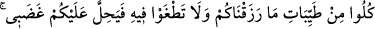
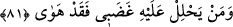
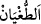
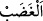

gibidir. İsrailoğulları şaşkın şaşkın dolaşmakla imtihan edilmişler, ama hiç zahmetsiz
olarak rızıklandırılmışlardır.
Ey Kerîm ki gayb hazînenden
Ateşe ve puta tapanların rızkını kesmezsin
Dostlarını nasıl mahrum edersin?
Senin ki düşmanlarına bile nazarın vardır
81. Size rızık olarak verdiklerimizin temiz olanlarından yiyin, bu hususta taşkınlık
ve nankörlük de etmeyin; sonra sizi gadabım çarpar. Kimi de gadabım çarparsa,
hakikaten o, yıkılıp gitmiştir.
Ey İsrailoğulları! Size dedik ki: “Size rızık olarak verdiklerimizin temiz” lezzetli
veya helâl “olanlarından yiyin,”
Râğıb der ki: “Tayyib”in aslı, duyulara ve nefse lezzetli gelen şeydir. Şer’an “tayyib
yiyecek” yenilmesi câiz olandan, câiz olacak miktarda ve câiz olan yerden yenilen
yiyecektir. İşte bu durumda olan yiyecek ne zaman alınırsa alınsın tayyibdir. Hemen
alınması ya da belirli bir süre sonra alınması onun bu vasfını değiştirmez. Ancak
sağlığa zararlı olmaması gerekir. Aksi takdirde hemen alındığı halde temiz olanın,
bekletildiği zaman bu özelliğini yitirmesi söz konusu olurdu.”
“Bu hususta taşkınlık ve nankörlük de etmeyin;” “
” isyânda sınırı aşmaktır.
Yani size verdiğimiz rızıklarda sınırı aşmayın. Size verdiğimiz temiz rızıkları
helâlinden tüketin ve onları size verene şükretmezlik etmeyin. Onları sarf ederken de
sınırı aşmayın. Rızkınız bol iken taşkınlık edip de onu saçıp savurmayın. Ancak tutumlu
olayım derken, elinizdekini hak sahibine, muhtaçlara vermekten de geri durmayın. Onu
bir gün ve geceden fazla biriktirmeyin. “Sonra sizi gadabım çarpar.” Yâni yukarıda
belirtilen hususlara uymadığınız takdirde, cezalandırmam size gerekli olur.
“
” intikam arzusu duyulduğunda kalpte deverân eden kanın kabarması demektir.
Allah Teâlâ bu kelime ile tavsif edildiğinde kasdedilen sadece intikamdır, başka bir şey
değil.
Mesnevî’de der ki:
Nimet verene şükretmek aklen de lâzım.
Şükretmeyen, kendisine ebedî hışım kapısını açar
“Kimi de gadabım çarparsa, hakikaten o, yıkılıp gitmiştir.” Yani o, düşmüş ve helâk